4. Method Classification
A.
Definitions
1.
A group of Methods that contain the same, defined features. Click here for a diagram that shows the Method Classes and the relationships between them. These classes are defined in Sections 4.C to 4.E below, except that Static Method and Dynamic Method are defined in Section 3.E.
Further explanation: Note that Dynamic Methods are not currently sub-classified to lower levels.
The classification system for method ringing evolved over many decades and as a result is more complex than if we were starting from scratch. Making any large-scale changes to the classification system is problematic because class terms form part of a Method's Title (see Section 5.A.3), so changes to classifications also alter Method Titles, making it harder to interpret historical records of method ringing Performances.
2.
A bell that ends a Plain Lead in the same Place as it started.
Example:
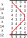
Further explanation: The place notation for the Method Plain Bob Minimus is x14x14x14x12. This place notation produces one Plain Lead when applied once to an initial Row. Using an initial Row of 1234 (Rounds), the Plain Lead shown in the diagram is produced. To identify which are the Hunt Bell(s), look at the final Row produced (in this example it is 1342). The Hunt Bell(s) are the bell(s) that are in the same Place(s) in the final Row as they were in the initial Row. In Plain Bob Minimus, the bell in 1st’s Place in the initial Row (in this example, the treble) is therefore the only Hunt Bell.
Technical comment: Note that a Plain Lead is defined in terms of a Static Method. The concept of a Hunt Bell may not apply to Dynamic Methods.
3.
A bell that ends a Plain Lead in a different Place from where it started.
Further explanation: Using the example in Section 4.A.2 above, the bells in 2nd's, 3rd's and 4th's Places in the initial Row (in this example, the 2nd, 3rd and 4th respectively) are Working Bells because at the final Row of a Plain Lead they have not returned to the same Places they were in at the initial Row.
Technical comment: Note that a Plain Lead is defined in terms of a Static Method. The concept of a Working Bell may not apply to Dynamic Methods.
4.
Example: 3rd's Place bell in Martyrs Link Little Bob Major is a Stationary Bell.
Technical comment: Note that a Plain Lead is defined in terms of a Static Method. The concept of a Stationary Bell may not apply to Dynamic Methods.
5.
Where a Path ends in the same Place as it started, it is considered to be a loop, and these two Places coincide and are only counted once.
Two such Paths are considered equal if the first Path can be started from a Place that gives the second Path.
Example: A Path is commonly depicted by drawing a line through the bell in question.
The treble’s Path is depicted with a red line in the example in Section 4.A.2 above.
Since this Path starts and ends in the same Place (1st's), it is considered to be a loop, and the Path therefore comprises 8 Places.
Further explanation: Consider the following two Paths, which are both loops:
6.
Example: See the example of a Little Path in Section 4.D.6 below.
Further explanation: A Little Path is most commonly used in reference to a Hunt Bell. For example, the Hunt Bell Path in Little Bob Minor is a Little Path. However, a Little Path can also be used with Working Bells. For example, 2nd's Place Bell in Bristol Surprise Major can be said to be a Little Path, and all the Working Bells in Magenta Little Place Maximus have Little Paths over the full Plain Course (and its Hunt Bells also all have Little Paths).
Note that a Stationary Bell has a Little Path.
7.
A Path that is formed by progressing from an earlier Place to a later Place, or vice versa (but not a combination of both), at the rate of one Place per Row. (Alternative form: a bell Hunts.)
Further explanation: In the diagram in Section 4.A.2 above, the treble Hunts up in the first half of the lead, and then Hunts down in the second half of the lead.
8.
9.
Example: Little Bob Minor has the sequence of Changes x16x14x16x12. The Leadend Change is the last of these Changes -- i.e. 12.
Further explanation: Also see the diagram in Section 4.A.12 that shows the location of Leadend Changes.
Technical comment: Note that the concept of a Leadend Change may not apply to Dynamic Methods.
10.
Further explanation: Note that Halflead Change is a concept that applies to Methods whose sequence of Changes is even in Length. The Halflead Change occurs at the position that is the sequence Length divided by 2.
Also see the diagram in Section 4.A.12 that shows the location of Halflead Changes.
Technical comment: Note that the concept of a Halflead Change may not apply to Dynamic Methods.
11.
When applying a Method's sequence of Changes to produce a Plain Lead, the Leadend is the Row to which the Leadend Change is applied.
Further explanation: See the diagram in Section 4.A.12 that shows the location of Leadends.
Technical comment: Note that a Plain Lead is defined in terms of a Static Method. The concept of a Leadend may not apply to Dynamic Methods.
12.
When applying a Method's sequence of Changes to produce a Plain Lead, the Leadhead is the Row to which the first Change of the sequence is applied.
Further explanation: The formal definitions for Leadhead and Leadend are provided above, and this terminology is helpful when, for example, a Composition is being tested for Truth using tables of false course heads.
But note that in practice, ringers and conductors often refer to the Leadhead Row as the lead end.
Example: The diagram below shows the Leadheads, Leadends, Halflead Changes and Leadend Changes for a Plain Course of Plain Bob Minimus.
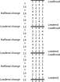
Technical comment: Note that a Plain Lead is defined in terms of a Static Method. The concept of a Leadhead may not apply to Dynamic Methods.
13.
Making a Place is occupying the same Place for two consecutive Rows. (Alternative form: a bell Makes a Place.)
Further explanation: In the example in Section 4.A.2 above, the treble Makes 4th's at the Halflead Change, and Makes 1st's at the Leadend Change.
Other forms also exist. For example, occupying the same Place for 3 consecutive Rows might be referred to as 'Making a Place twice' or (e.g.) 'Making 3 blows in 2nd's'.
See the example of Making one or more Places in Section 4.D.1.1 below.
14.
15.
Example: In a Path where the Hunt Bell moves between 1st's Place and 6th's Place, the Dodging Places are 1-2, 3-4 and 5-6. The diagram below shows the Dodging Places for Kent Treble Bob Minor.
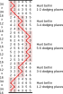
16.
Further explanation: Cross Sections are used in the classification of Treble Dodging Methods -- see Sections 4.D.2.1, 4.D.2.2 and 4.D.2.3 below.
In a Method with more than one Hunt Bell, the Cross Sections may be defined by only a subset of the Hunt Bells -- see Section 4.E.4 below.
Example: In a Method with one Hunt Bell that moves between 1st's Place and 6th's Place, since the Dodging Places are 1-2, 3-4 and 5-6, the Cross Sections are the Changes that cause the Hunt Bell to:
17.
A sequence of Changes can be rotated by considering it as a loop, and starting it at a different point. This process is called Rotation. By using this process on the Changes of a Static Method, other Static Methods can be produced that are Rotations of the original Static Method.
Example: The Method Plain Bob Minimus has the Changes x14x14x14x12. The Static Method with the Changes x14x12x14x14 is a Rotation of Plain Bob Minimus.
18.
A Cycle is a set of one or more bells that follow the same Path and return to their starting Places after the same number of Plain Leads. This number of Plain Leads is the same as the number of bells in the Cycle.
Where a Cycle is made up of two or more bells, the bells successively occupy each other's Places at the Leadheads of a Method's Plain Course, and these bells are Working Bells.
Where a Cycle is made up of one bell, this bell is a Hunt Bell.
132645, 123564, 132456, 123645, 132564 and 123456.
B.
Method Symmetry
1.
A Method has Palindromic Symmetry if the same Changes result (after Rotation if needed) when read backwards, that is, when the order of the Changes is inverted.
Further explanation: Plain Bob Minor has the sequence of Changes x16x16x16x16x16x12. If this sequence is read backwards, the result is 12x16x16x16x16x16x. This can be Rotated to give x16x16x16x16x16x12, which is the same sequence as above. This Method therefore has Palindromic Symmetry.
About 95% of the Methods in the Methods Library (as of 2018) have Palindromic Symmetry.
Example: Section 4.B.3 below includes an illustration of Palindromic Symmetry.
2.
A Method has Double Symmetry if the same Changes result (after Rotation if needed) when reversed, that is, when the Places within each Change are inverted.
Further explanation: Inverting the Places within a Change means to count the Places from the end of the Row rather than the beginning. For example, a Minor Change might have Places made in 1st's and 2nd's, so place notation = 12. 1st's and 2nd's Places counted from the end of a Minor Row are 5th's and 6th's Places. So when the Minor Change 12 is inverted, the result is 56. Similarly, 14 becomes 36, and 34 becomes (in this case, remains) 34.
Double Union Minor has the sequence of Changes x16x36x56x16x14x12. If each of these Changes is inverted, the result is x16x14x12x16x36x56. This can be Rotated to give x16x36x56x16x14x12, which is the same sequence as above. This Method therefore has Double Symmetry.
About 2% of the Methods in the Methods Library (as of 2018) have Double Symmetry.
Example: Section 4.B.3 below includes an illustration of Double Symmetry.
3.
A Method has Rotational Symmetry if the same Changes result (after Rotation if needed) when reversed and read backwards.
Further explanation: Evening Exercise Bob Minor has the sequence of Changes x14x36x16x16x16x16. Inverting these changes (see Section 4.B.2 above) gives: x36x14x16x16x16x16. Reading these Changes backwards gives 16x16x16x16x14x36x. This can be Rotated to give x14x36x16x16x16x16, which is the same sequence as above. This Method therefore has Rotational Symmetry.
About 2% of the Methods in the Methods Library (as of 2018) have Rotational Symmetry.
Note that although the above Method has Rotational Symmetry, it does not also have Palindromic or Double symmetry, even though the process for testing for Rotational Symmetry involves reversing the Changes and reading them backwards.
However, about 93% of the Methods in the Methods Library (as of 2018) that have Rotational Symmetry do also have Palindromic and Double Symmetry. An example of a Method with all three symmetries is Double Court Bob Minor (x14x36x16x36x14x16).
The general rule is that if a Method has any two of the three symmetries (Palindromic, Double and Rotational), it must also have the third. However, a Method can have any one of these three symmetries without having either of the other two. A Method can also have none of the three symmetries.
Example: Click here for illustrations of the three symmetries.
C.
Method Classes: Upper Levels
1.
2.
A Static Method that has one or more Hunt Bells.
Example:
Further explanation: A Plain Lead of the Minimus Method x14x14x14x12, starting from Rounds, ends with the Row 1342, as shown in the diagram. At the end of one Plain Lead, the treble is the only bell that has returned to the Place it was in at the initial Row (1234), so the treble is this Method's only Hunt Bell. The other 3 bells are therefore Working Bells. Continuing to apply the place notation successively produces the 2 additional leads shown, such that after 3 Plain Leads, Rounds is obtained. This is the Method’s Plain Course. Since this Method has at least one Hunt Bell, it is a Hunter. (This Method is Plain Bob Minimus.)
3.
A Static Method that has no Hunt Bells.
Example:
Further explanation: A Plain Lead of the Minimus Method 34x34.14.12.14, starting from Rounds, ends with the Row 2341, as shown in the diagram. At the end of one Plain Lead, no bell has returned to the Place it was in at the initial Row (1234), so this method has no Hunt Bells. Continuing to apply the place notation successively produces the 3 additional leads shown, such that after 4 Plain Leads, Rounds is obtained. This is the Method’s Plain Course. Since this Method has no Hunt Bells, it is a Principle. (This Method is Stanton Minimus.)
4.
A Static Method in which the Working Bells do not all first return to their starting Places after the same number of Plain Leads.
Example:
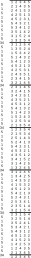
Further explanation: A Plain Lead of the Doubles Method 5.1.5.1.5.1.5.1.5.345, starting from rounds, ends with the Row 31254, as shown in the diagram. At the end of one Plain Lead, no bell has returned to the Place it was in at the initial Row (12345), so this Method has no Hunt Bells. All bells are therefore Working Bells. Continuing to apply the place notation successively produces the 5 additional leads shown, such that after 6 Plain Leads, Rounds is obtained. This is the Method’s Plain Course. It will be seen that bells 4 and 5 return to their starting Places at the end of the 2nd, 4th and 6th leads, whereas bells 1, 2 and 3 return to their starting Places at the end of the 3rd and 6th leads. Since the Working Bells do not all first return to their starting Places after the same number of Plain Leads, this is a Differential Method. (This Method is Christ Church Dublin Differential Doubles.)
While the example above shows a Differential with no Hunt Bells, Hunters can also be Differentials. For example, see Deferential Differential Bob Minor.
Technical comment: It takes a minimum of 5 Working Bells to create a Method that is a Differential.
D.
Method Classes: Hunters with One Hunt Bell
1.
A Hunter in which:
- The Hunt Bell is not a Stationary Bell; and
- The Method does not use Jump Changes.
Example:
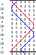
Further explanation: In this Method, the treble (which is the only hunt bell) rings two times in each Place in a Plain Lead, is not a Stationary Bell, and there are no Jump Changes. This Method is therefore a Plain Method. (This Method is Plain Bob Minor.)
The Path of the treble in the example above is often referred to as a Plain Hunt Path (or Plain Hunting Path) -- i.e. Hunt up, Make a Place, Hunt Down, and make another Place. This Path is the only one (for Methods with a single Hunt Bell, and when excluding Jump Changes and Stationary Bells) that meets the criterion of ringing exactly twice in each Place of the Path during a Plain Lead.
1.1.
A Plain Method in which the Paths of all the bells consist only of Hunting and Making Places, and in which a change in the direction of Hunting is separated by Making one or more Places.
Example:
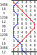
Further explanation: In this Plain Method, changes in the direction of Hunting by all bells are always separated by Making one or more Places. This Method is therefore a Place Method. (This Method is Foti Place Minor.)
1.2.
A Plain Method that is not a Place Method.
Example:
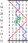
Further explanation: The 'points' in the blue line of this Plain Method, such as those circled in green, show that a Place is not Made between changes in the direction of Hunting. This Method is therefore a Bob Method. (This Method is Double Oxford Bob Minor.)
2.
A Hunter in which:
- The Hunt Bell is not a Stationary Bell; and
- The Method does not use Jump Changes.
Example:
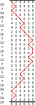
Further explanation: In this Method, the treble (which is the only hunt bell) rings four times in each Place in a Plain Lead. The treble Makes a Place twice during a Plain Lead, once in 6th's and once in 1st's, it is not a Stationary Bell, and there are no Jump Changes. This Method is therefore a Treble Dodging Method. (This Method is Kent Treble Bob Minor.)
2.1.
A Treble Dodging Method in which no bell Makes an Internal Place at any Cross Section, or which does not have any Cross Sections.
Example:
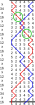
Further explanation: At this Treble Dodging Method's Cross Sections, which are circled in green, there are no Internal Places Made. The Places Made at both Cross Sections are 1st's and 6th's, which are external Places. Since this Method has Palindromic Symmetry (see Section 4.B.1 above) there is no need to check the Cross Sections in the second half of the lead as these will have the same Places Made as in the first half of the lead. However for non-Palindromic Methods, all Cross Sections must be considered when further classifying a Treble Dodging method. This Method is therefore a Treble Bob Method. (This Method is Oxford Treble Bob Minor.)
2.2.
Example:
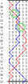
Further explanation: An Internal Place is Made at both of this Treble Dodging Method's Cross Sections, which are circled in green. 4th's is Made at the 2-3 Cross Section, and 3rd's is Made at the 4-5 Cross Section. (See the note about Palindromic Symmetry in Section 4.D.2.1 above, which also applies here.) This Method is therefore a Surprise Method. (This Method is Cambridge Surprise Minor.)
2.3.
Example:
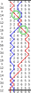
Further explanation: An Internal Place is Made at the 2-3 Cross Section of this Treble Dodging Method, but an Internal Place is not made at the 4-5 Cross Section (the Cross Sections are circled in green). (See the note about Palindromic Symmetry in Section 4.D.2.1 above, which also applies here.) Since Internal Places are Made at some but not all Cross Section Changes, this Method is therefore a Delight Method. (This Method is College Bob IV Delight Minor.)
3.
A Hunter in which:
- The Method does not use Jump Changes;
Or:
- The Hunt Bell is a Stationary Bell; and
- The Method does not use Jump Changes.
Example:
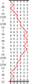
Further explanation: This Method is Stoke Albany Treble Place Minor. Other examples are: Primrose Treble Place Minor and Alderney Treble Place Minor.
4.
A Hunter in which:
- The Hunt Bell is not a Stationary Bell; and
- The Method does not use Jump Changes.
Example:
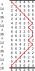
Further explanation: This Method is Alperton Alliance Minor. Another example is: Semiquincentenary Alliance Major.
5.
A Hunter in which:
- The Method does not use Jump Changes.
6.
E.
Method Classes: Hunters with More than One Hunt Bell
If a Hunter has more than one Hunt Bell, it has a further classification of the first Method Class found, when inspecting each of the Hunt Bells, using the order: Plain Method, Treble Dodging Method, Treble Place Method, Alliance Method, Hybrid Method.
If none of the Method Classes above are found, the Hunter has no further classification.
Example: Didymous Delight Major.
Further explanation: Didymous Delight Major has three Hunt Bells in 1st's, 2nd's and 3rd's Places. The treble has a Treble Dodging Path, and the 2nd and 3rd have Treble Place Paths. Since Treble Dodging comes before Treble Place in the order above, this Method has a Treble Dodging classification (and is further classified as Delight as described in Section 4.E.4 below).
Technical comment: Note that in a Method with two or more Hunt Bells, it's possible for a Hybrid Path to be symmetric (unlike for single Hunt Bell Methods where a Hybrid Path is always asymmetric). An example of this is a Method in which a pair of Hunt Bells dodge together for the entire Plain Lead. Provided the Lead Length is not 4 Changes, these Hunt Bells classify as Hybrid. If the Lead Length is 4 Changes, these Hunt Bells classify as Plain.
If the Path(s) of the Hunt Bell(s) of the first Method Class found in Section 4.E.1 above, if any, all meet the definition of a Little Method per Section 4.D.6 above, then the Hunter is classified as a Little Method.
If no Method Class was found in Section 4.E.1 above, then if the Paths of all the Hunt Bells meet the definition of a Little Method per Section 4.D.6 above, then the Hunter is classified as a Little Method.
Further explanation: Seven Stars Differential Little Hybrid Major has two Hunt bells in 5th's and 6th's Places. Both these Hunt Bells have Hybrid Paths, so the Method has a Hybrid classification. These Hunt Bells also both have Little Paths. Since all the Hybrid Paths are Little, this Method is also classified as Little.
Bushey Treble Place Triples has two Hunt bells in 1st's and 2nd's Places. Both these Hunt Bells have Treble Place Paths, so the Method has a Treble Place classification. The 2nd has a Little Path, but the treble does not have a Little Path. Since the Treble Place Paths are not all Little, this Method is not classified as Little.
If the first Method Class found in Section 4.E.1 above is a Plain Method, the Method is further classified in accordance with Sections 4.D.1.1 and 4.D.1.2 above.
Further explanation: Reverse Canterbury Pleasure Place Minor has two Hunt bells in 1st's and 2nd's Places. Both these Hunt Bells have Plain Paths, so the Method has a Plain classification. Since the Paths of all the bells in this Method consist only of Hunting and Making Places, with changes in the direction of Hunting separated by the Making of one or more Places, this Method is further classified as a Place Method.
Glastonbury Bob Triples has two Hunt bells in 1st's and 2nd's Places. The treble has a Plain Path and the 2nd has a Little Hybrid Path, so the Method has a Plain classification (because Plain comes before Hybrid in the order in Section 4.E.1). Since this Method has Paths that are not limited to Hunting and Making Places (i.e. there are dodges), this Method is further classified as a Bob Method.
If the first Method Class found in Section 4.E.1 above is a Treble Dodging Method, the Method is further classified in accordance with Sections 4.D.2.1, 4.D.2.2 and 4.D.2.3 above, using the following:
- If the Method has more than one Treble Dodging Hunt Bell, none of which are Little, or all of which are Little, the Cross Section Changes are all the Changes that are a Cross Section Change for any Treble Dodging Hunt Bell.
- If the Method has both Little Treble Dodging Hunt Bell(s) and non-Little Treble Dodging Hunt Bell(s), the Cross Section Changes are all the Changes that are a Cross Section Change for any non-Little Treble Dodging Hunt Bell.
Example: Vincula Surprise Royal.
Further explanation: Vincula Surprise Royal has three Hunt bells in 1st's, 2nd's and 3rd's Places. All these Hunt Bells have Treble Dodging Paths, so the Method has a Treble Dodging classification. None of the Hunt Bells has a Little Path, so the Cross Section Changes are all the Changes that are Cross Section Changes for any of the three Hunt Bells. It can therefore be seen that every 4th change in this Method is a Cross Section Change. Since all of these Changes (16, 18, 30, 50, 70, and 14 at the lead end) include an Internal Place being made, this Method is further classified as a Surprise Method.